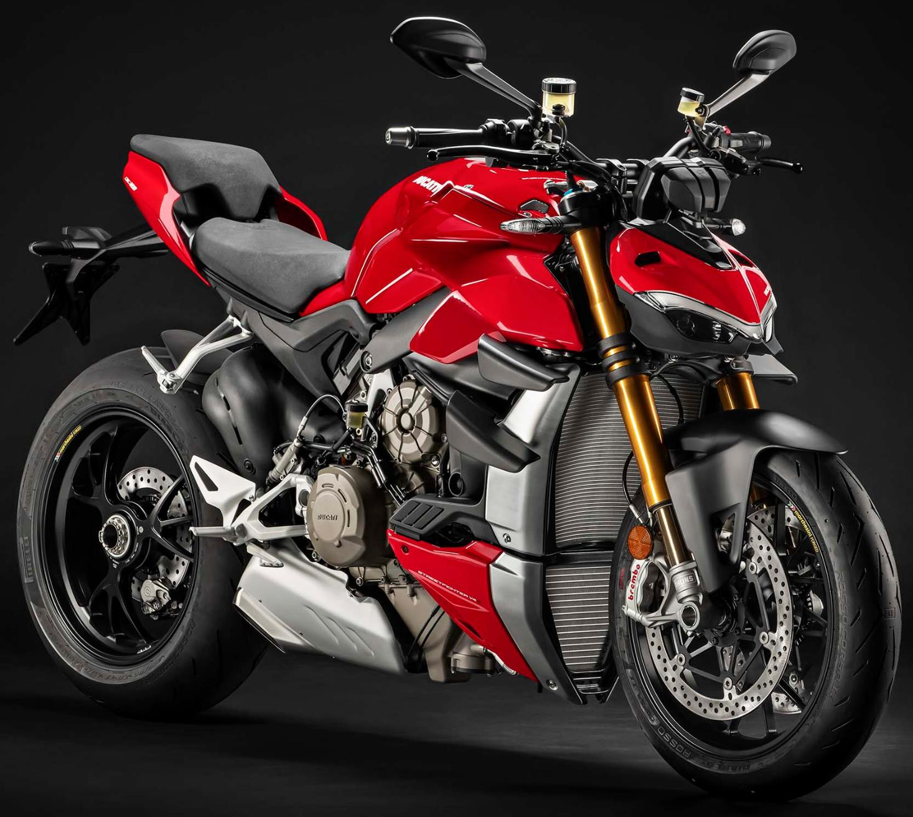

Let's look at some random pictures! from https://www.ducati.com/in/en/home
Ducati has launched its 2022 Panigale V4 range which consist of three variants, standard V4 which has a price tag of Rs.26.49 lakh, the Paniagle V4 S at Rs.31.99 lakh and the range-topping Panigale V4 SP2 available for Rs. 40.99 lakh, all prices ex-showroom India.level variants to join the current line-up in Malaysia, the Ducati Monster 797 and Ducati Multistrada 950.

PETALING JAYA, 10 August 2017 – In conjunction with the NAZA Merdeka Autofair 2017 which starts from 10th to 13th August 2017, Next Bike Sdn. Bhd., the sole importer and distributor of Ducati motorcycles in Malaysia, is pleased to announce the launch of two new entry level variants to join the current line-up in Malaysia, the Ducati Monster 797 and Ducati Multistrada 950.

PETALING JAYA, 10 August 2017 – In conjunction with the NAZA Merdeka Autofair 2017 which starts from 10th to 13th August 2017, Next Bike Sdn. Bhd., the sole importer and distributor of Ducati motorcycles in Malaysia, is pleased to announce the launch of two new entry level variants to join the current line-up in Malaysia, the Ducati Monster 797 and Ducati Multistrada 950.
